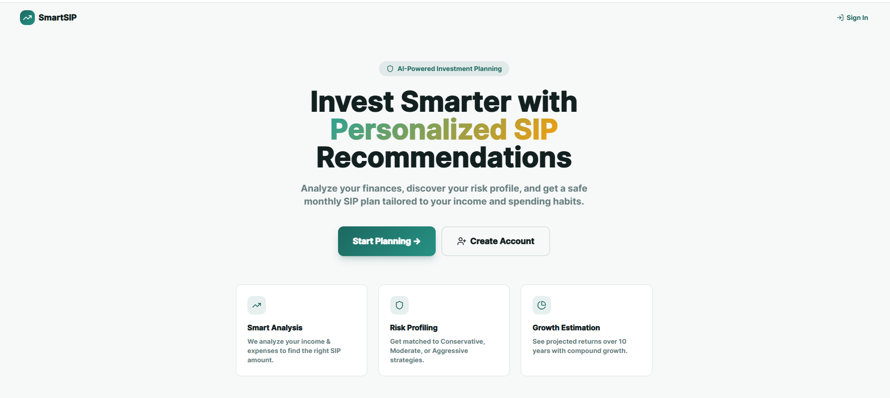
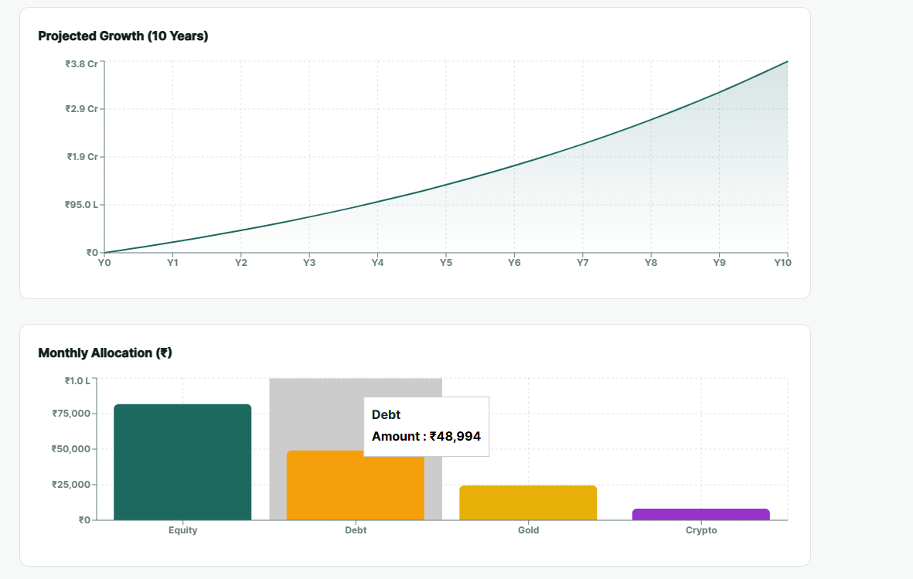

// Python · Flask Web App
A financial advisory web application that helps users understand and optimize their Systematic Investment Plans through data-driven insights and interactive visualizations.
SIP (Systematic Investment Plan) investing is one of the most popular wealth-building strategies, but most people struggle to visualise how their money actually grows. SIP Advisor was built to demystify long-term investing by letting users input their parameters and instantly see projected returns, breakdowns, and charts.
The application combines a Flask backend for financial computation with a dynamic JavaScript frontend that renders charts and insights in real time — making complex calculations feel simple and accessible.
How to expose Python logic as clean REST endpoints and consume them from a JS frontend.
Using Chart.js to turn raw number arrays into meaningful, interactive charts users can act on.
Deep-diving into SIP maths, compounding, and financial terminology to build something accurate.
Connecting a Python backend to a JS frontend without a heavy framework like React.

